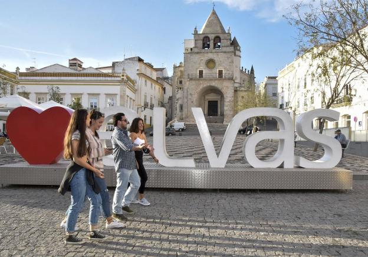
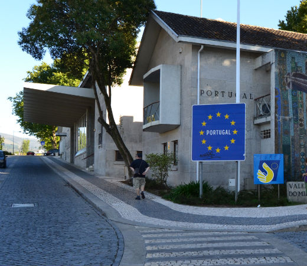

Portugal no permitirá entrar a los españoles durante el puente
El alcalde de Badajoz aseguró ayer que entiende la decisión tomada por el país luso

Trabajo, asistencia sanitaria y estudio. Son las tres únicas premisas que tienen para circular los ciudadanos no residentes en Portugal para viajar entre localidades durante el puente de Todos los Santos. La medida fue publicada ayer en el Diario de la República de Portugal, restringe la movilidad a partir del próximo 30 de octubre y hasta las 6 horas del 3 de noviembre, tiempo en el que estará prohibido circular entre municipios lusos. La prohibición impide a los españoles cruzar la frontera esos días salvo excepciones.
Según publica el periódico 'Linhas de Elvas', el ministro luso de Administración Interior, Eduardo Cabrita, declaró que las fronteras terrestres con España no se cerrarán durante el próximo fin de semana, cuando se impongan restricciones a la circulación, pero los no residentes solo «deben venir a Portugal única y exclusivamente para este marco de circulación autorizado: trabajo, asistencia sanitaria y estudio».
Mascarilla obligatoria
Además, desde ayer Portugal obliga al uso de mascarilla por la calle, siempre que no se pueda mantener la distancia social aconsejada, para todas las personas mayores de diez años.
En el último mes y medio, los contagios se han disparado en Portugal, especialmente en la región Norte y en la zona de Lisboa, mientras que ayer se registraron 3.299 nuevos positivos
–el segundo peor día de la pandemia– y 28 muertes. La presión hospitalaria también ha aumentado de forma exponencial con un total de 1.747 pacientes covid ingresados en planta y 253 en cuidados intensivos.

Por su parte, el alcalde de Badajoz,
Francisco Javier Fragoso, reconoció ayer que entiende la decisión tomada por el Gobierno luso de limitar la movilidad, dadas las cifras de contagios que está presentando el país luso en los últimos días. «Entiendo lo que va a hacer Portugal y me gustaría que no tuviera que estar en las circunstancias que lo obligan, pero entiendo que efectivamente hay una absoluta correlación entre la movilidad y el número de casos que salen», aseveró el regidor, al tiempo que añadió en este sentido en que «en momentos determinados hay que tomar decisiones».
Fragoso también cree que debería haber un aislamiento de Extremadura. «Al alcalde lo que le gustaría es que no hubiera covid, y es que hubiera una vacuna, a partir de ahí las medidas que nos marquen son las que todo el mundo tenemos que asumir».